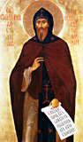

Informatie over de orthodoxe parochies van Nederland kunt u vinden hier
|
|
|
 Heilige rechtgelovige Grootvorst Alexander Nevski.
(feestdagen 12 september, 6 december) [meer...]
On June 20, the Russian Orthodox Church
dedicated to the Holy and Right-Believing Prince Alexander Nevsky (the
Hague and the Netherlands diocese of the Moscow Patriarchate) was
consecrated in Rotterdam, which is the second in size city of the
Kingdom of the Netherlands and the largest port of Europe [meer...]
... |


")

")